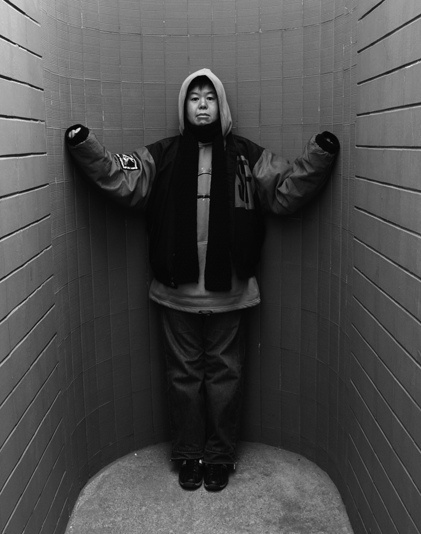

颜磊不是艺术家
崔子恩
1995年，颜磊举办题为《浸入》的个人装置展。其中展出的《323cm2》是照片、录像与实物的混合。照片上是一头待宰尖嘴母猪，它的右侧腹背处被颜磊用白粉涂出一个323cm2的方块。录像系统记录的是这头母猪被宰杀和323cm2方块所包含的肉被取下的全过程。实物则是那块323cm2所圈定的肉被泡在一只玻璃瓶中。照片/静像——录像/动像——实物/静物的符号系统中，生与死，合法宰杀与公开展览、人与兽、食物与标本、食品来源与食品去向，统统受到颜磊的严正质询与颠倒：当一头有生命的动物被人的目光丈量之后，它就变成了一块兽 肉，而不再是活生生的同人一样有权利生存下去的生命，宰杀动物从来都是合法的……
颜磊的观念艺术作品，正是从对人类文化、文明、习俗最基本的观念，从艺术是否为艺术的基本观念出发、深刻地、尖锐地、不容反身自怜地进行革命性透析，振聋发聩的地对我们习以为常的意识——语言——行动——思想世界展开一针见血的刺伤与颠覆。进入颜磊的作品界域，人们会不由自主地颠抖、惊悸、丧失安全感，会感到被拷问、被逼视，直至窒息。
颜磊的挑战性，无所不在
在《浸入》个展中，Video《1500cm》同样引人瞩目。我们在监视系统上监看到颜磊本人用卡尺一米一米地丈量好一根1500cm长的脏绳子，然后用金鱼牌子洗涤剂将它洗净，然后放到一只瓷盘中，看上去像一盘阳春面。这时候，站立的颜磊坐下来，载着大眼镜开始吃绳子，把绳子全部吃下之后，拿来一只预置的空咖啡瓶，扯出绳头，一段一段向外拉。行为至此，绳子似乎从“面条”变态为人体内的肠子，颜磊把“小肠”一段段拉出来，置放到瓶胆中。这时候，瓶子变态为人的脏腹，颜磊出画后，我们看到的是椅背，桌面和桌面上一只瓶子，瓶子中装着经历过人的胃肠之旅的1500cm长的绳子。这部作品在北京电影学院、鲁迅文学院、北京师范大学艺术系的讲堂上放映之后，观众们或是震惊、或是拒斥，或是不屑，或是只对颜磊是否真的将绳子吞进肚内各执一辞，共同的反应是：多多少少感到了伤害。
颜磊的装置艺术具有伤害性么？
他首先伤害了他自己。在《No.031007》的照片、录像、验伤证明、助手实在的“共同体”中，颜磊本人是棍棒的“牺牲品”。Video忠实记录的是艺术家本人挨打的过程，而不是我们习以为常的纪录片中记录的“他人的苦难”。颜磊不许艺术家“旁观”现场，他就是现场，就是暴力现场的受害者。在《No.0023283E》的照片、实物、验伤证明混合体中，颜磊再一次作为受伤者出现，他的牙齿被人打掉一颗半，左半脸颧骨以上青紫一片，鼻血和口血淋漓着浸染了脖颈与胸襟。这两部作品的题名都是病历的编号：谁被严刑拷打？谁被迫害？谁是暴力的制造者？谁承担暴行的后果？
颜磊用自己的身体发出质问
1996年，他在《绝对安全》中抽离自己的身体，把一台播映着电视节目的监视器放在地板上，光可鉴人的地板反映着监视器的画面与光影，在画面与光影上铺陈着一只打碎的陶瓷茶杯的碎片：如果颜磊或者你我赤足踏上去，如果画面中的人物变成实体，它们就会刺破我们的肌肤。这里隐含着不见血的血腥。碎片、标板上的告示和被电视机所保护的画面，构织成一种无法逃避的现代精神恐惧图景：何处有内心绝对安全？
与《绝对安全》同年度，颜磊展出了丙烯画《去德国的展览有你吗？》。蓝天与红旗是戴头盔的击剑运动员的背景，运动员的右臂上绣着黄底红色的徽章。画面上只见惟一的人像，他/她左手执剑，一副奥林匹克赛场上上场前或终场后的作派。她/他代表着一种纯粹的血统么？他/她意味着一种国家主义还是个人主义？她/他会成为惟一的冠军还是会成为冠军中心制的奥林匹克精神的悲剧配角？
由此开始，颜磊以《邀请信》（1997）、《致歉信》等作品对艺术和艺术家中心的建制进行了义无反顾的批判与否定。《去德国的展览有你吗？》既质询艺术家寻求国际“公认”的荏弱，又对艺术的“比赛”性发出怀疑。艺术活动向奥林匹克运动会靠拢，艺术家们争取参展机会如同运动员争夺参赛资格一样，这样的体制还值得人们信之不疑甚至趋之若鹜么？于是，颜磊制作了一封假的国际世展的邀请信，向几十位艺术家分发。收到邀请者备感受到捉弄、没收到邀请又自认为重要艺术家的倍感受到冷落，颜磊又与他们的合作者洪浩一同在《江苏画刊》上发表《致歉信》。就此，他的这项“行为艺术”似乎已经结束。它所造成的刺痛至今仍不断出现在艺术体制身上。艺术以艺术的名义所实施的精英主义策略因此而溃疡，并有望以一蚁之穴溃决整个堤坝。
颜磊是一只蚂蚁，在艺术的古老大堤上挖了一个巢穴，不为安身，只为破坏。
《欢迎颜磊到上海》（1997）是颜磊由北京移居香港后的装置作品。在上海当代美术馆举行的国际艺术展上，一道书写着“欢迎颜磊到上海”的巨型横幅“点题”着主展厅。一些参展的艺术家努力回避着这个横幅，颜磊在横幅的作用下成了“大人物”——只有大人物才能享有如此优待。而真正的艺术家是不是“大人物”呢？或者说，艺术家的宗旨是不是要成为“大人物”呢？
没有人“欢迎颜磊到上海”，从来就没有。也从来没有人把“大人物”当大人物看。只有颜磊/“大人物”制造的“万众耸动”效应。颜磊只好把投枪直接瞄准自身：刺中自己就是刺中斤斤于地位的艺术家群体，冒犯自己就是公然地冒犯他们。由此，我们不难发现颜磊的观念革命是从颠覆由来久远的“艺术”或“艺术家”观念开始的。他的动机和行动的批判性及其彻底性，也由此崭露着端倪。难怪在此之后，1998年和1999年，他自认他“改变”了。
颜磊“改变”了么？
与其说是变化，不如说是转换：他已经在《这里通往卡塞尔》（1998，香港启德机场）中，悄然隐去艺术和艺术家的存在，仅仅向人们展示出一个四通八达的处所和在这个著名的处所中拍照留影的无名的人物。要去的地方可以有很多，要走的道路可以有千万条，艺术家中心制的艺术时代/艺术神圣的时代早该或者说已经终结。于是，颜磊仅仅作为深圳默林一家酒店的客人和罗湖另一家同类场所的消费者举起了摄像机，它替代的仅仅是他的“观看”，再无其它：它/他都不再有阐释权和虚构/创作的权力。于是，颜磊成为北京木樨园开往河北某地长途汽车上的一名普通乘客，他或他的摄像机镜头“看到”的是不具任何表演性的、没有故事没有主角只有细节的日常景观。
这不是故作“平民”的平民化艺术策略。不是为艺术寻找新的座标与尺度。这里体现的，仅仅是颜磊批判之后的弃绝：艺术和艺术家不再与任何特权相关。它/他的活动同日常行为的差距，远远不似人们所定义、所虚构出的差距那么大。差距悬殊是文化建构的古老秘密，破除它，破除艺术的神话姿态，也许正是我们的世代走出权力滥觞的关键所在。今日艺术家应该做的，不再是强固权力之锁，而是像颜磊一样，打碎它，在“艺术”的外衣剥除之后，考验我们还能够进行怎样的“创作”。
颜磊没有想象力
颜磊在《二手店》等作品之后，宣称自己的作品“不是作品”，宣称自己“没有想象力”。
说颜磊没有想象力，就等于说颜磊不是艺术家。古往今来，想象力一直被奉为艺术的绝对价值，是艺术家和艺术家的艺术才能地终极衡量尺度。如今，颜磊破坏了这个链条，或者说，是把自己从这个链条上摘弃下来，与早已体制化了的艺术和艺术家建构公然划清界限。
颜磊把自己和所有号称艺术家的人才神位上拉下马。艺术至上的时代，因此而一去不复返。
崔子恩

崔子恩
身兼導演、編劇、製片人及小說家等多重身份，現為北京電影學院電影研究所研究員。已經出版長篇小說、中短篇小說集、論說著作16部。另有電影作品20多部，包括《丑角登場》、《舊約》、《哎呀呀，去哺乳》《我如花似玉的兒子》及《誌同志》等。作品曾在美國20多間大學、荷蘭鹿特丹國際電影節、加拿大溫哥華國際電影節、香港國際電影節、英國倫敦電影節、德國柏林國際電影節、韓國釜山國際電影節及義大利都靈GLBT電影節等地放映。多次獲得國際獎項。